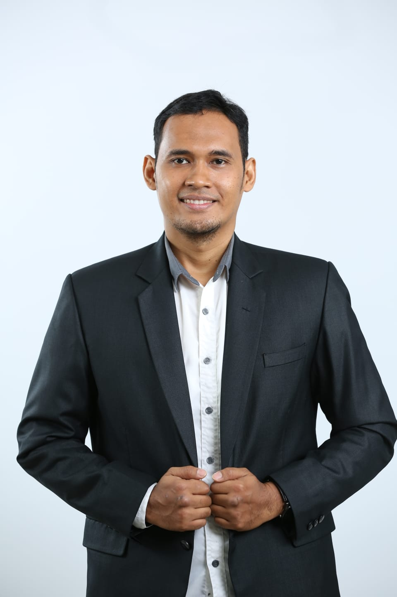

Muhammad Hafiz Kurniawan

Summary
I am a dedicated researcher on video games and
I am trying to make my own video game for educational purposes.
I am learning to code to reach my goal as a educational video game developer.
Education
- Bachelor of English Literature - Universitas Ahmad Dahlan (2010-2013)
- Master of Arts - Universitas Gadjah Mada (2013-2015)
- Doctor in Linguistics - Universitas Pendidikan Indonesia (2021-2024)
Work Experience
English Literature Lecturer - Universitas Ahmad Dahlan
February 2016 - Present
- Teaching Semantics, Discourse Analysis and Multimodal Text Analysis
- Conducting research on Tradtional Grammar, Cognitive Linguistics, and Systemic Functional Linguistics
- Doing Community Service on English for Young Learners and English for Special Needs
Visiting Lecturer in Cambodia - Ministry of Education and Culture
May - August 2017
- Teaching Bahasa Indonesia in Muslim Community
- Teaching Bahasa Indonesia for Primary Schools
- Conducting research on Cham Language and its grammatical features and its Folk Taxonomy
English Instructor - Ahmad Dahlan Language Center (ADLC)
September 2012 - February 2016
- Mostly tutoring TOEFL preparation
- Teaching English for Specific Purposes
- Teaching General English for Listening-Speaking and Reading-Writing Skills
Freelance Translator - Private Company
December 2012 - September 2013
- Mostly translating academic articles from client
- translating without using google translate and AI assistant
Skills
- English Skills ★ ★ ★ ★ ★
- Microsoft Office ★ ★ ★ ★
- Corel Draw ★ ★ ★
- Canva ★ ★ ★
- Bandicut ★ ★
Awards and Ceritification
- Assessor of Competency - National Professional Certification Agency (BNSP)
- Improvement of Basic Instructional Technique Skills - Universitas Negeri Yogyakarta (UNY)
- Dan 1 Kukkiwon - World Taekwondo Headquarters
Other
My Hobbies
My Contact